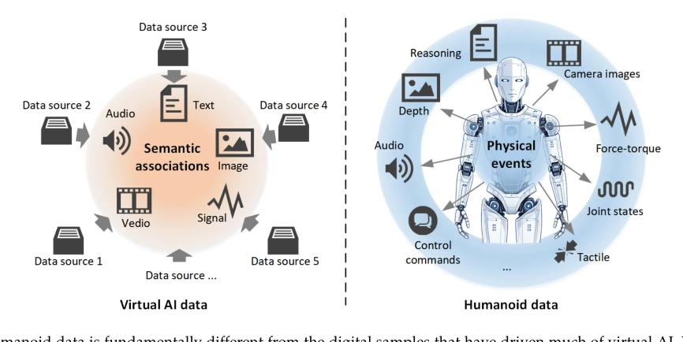
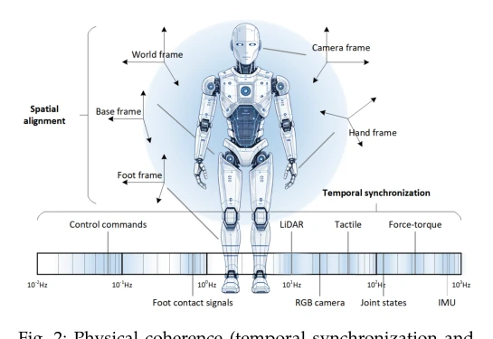
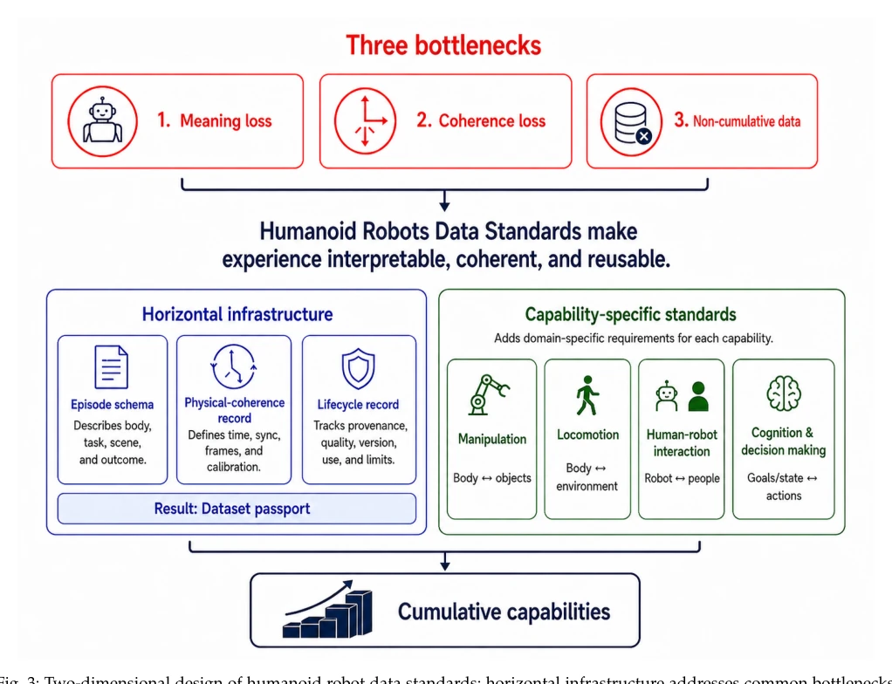

Data Standards for Humanoid Robotics: The Missing Infrastructure for Physical AI
Shaoshan Liu, Xiugong Qin, Xuan Wu, Xuan Xia, Ning Ding, Jialu Liu abspdf
论文点评Review
这篇论文与其说是技术突破，不如说是给物理 AI 泼了一盆冷水。作者没提新模型，反而指出行业在“裸奔”：数据标准缺失导致经验无法累积。虽然 ISO 标准听起来枯燥，但确实戳中了痛点——现在的人形机器人数据就像一堆散落的零件，换个机器人就拼不起来。亮点在于提出了“物理一致性”概念，把时间同步和坐标对齐上升到数据价值核心。缺点嘛，这种标准论文通常落地难，毕竟让各家大厂统一数据格式比训练一个 VLA 模型还难，且缺乏强制力。不过，作为基础设施的呼吁，确实比单纯刷榜更有长远意义。
This paper is less of a technical breakthrough and more of a bucket of cold water poured on physical AI. The authors do not propose new models; instead, they point out that the industry is "running naked": the lack of data standards prevents experience accumulation. Although ISO standards sound dry, they indeed hit the pain point—current humanoid robot data is like a pile of scattered parts that cannot be assembled when switching robots. The highlight lies in proposing the concept of "physical consistency," elevating time synchronization and coordinate alignment to the core of data value. The drawback is that such standard papers are usually difficult to implement, as unifying data formats among major companies is harder than training a VLA model, and lacks enforcement power. However, as a call for infrastructure, it indeed has more long-term significance than simply ranking on leaderboards.
研究动机Motivation
核心问题是具身智能从“单点演示”走向“规模化部署”时，经验无法复用。现有工作如 Open X-Embodiment [9] 虽聚合了多机器人数据，但缺乏统一结构，导致跨平台复用困难，正如 [8] 指出的数据工程瓶颈。作者指出当前数据层存在三大瓶颈：收集成本高（真实数据约$180/小时 vs 仿真$2.20/小时 [24]）、数据孤岛（假设不一致）、评估空洞（大小不代表质量 [8]）。没有标准，数据只是存储而非基础设施。这导致每次新部署都要重新学习，违背了 AI 规模化的初衷。
The core problem is that when embodied intelligence moves from "single-point demonstration" to "scaled deployment," experience cannot be reused. Existing work such as Open X-Embodiment [9] aggregates multi-robot data but lacks a unified structure, leading to difficulties in cross-platform reuse, as the data engineering bottleneck pointed out by [8]. The authors point out three bottlenecks in the current data layer: high collection costs (real data approx. $180/hour vs. simulation $2.20/hour [24]), data silos (inconsistent assumptions), and evaluation voids (size does not represent quality [8]). Without standards, data is merely storage rather than infrastructure. This leads to relearning for every new deployment, violating the original intention of AI scaling.

Fig. 1: Humanoid data is fundamentally different from the digital samples that have driven much of virtual AI. Virtual AI data comes from different sources and modalities, which are aggregated and used through semantic associations. Humanoid data is generated from physical events, and there is a nat

Fig. 2: Physical coherence (temporal synchronization and spatial alignment) is the hidden requirement of humanoid data.
The core of the method is to build a data standard system, divided into two dimensions. First is "horizontal infrastructure," defining metadata, lifecycle, provenance, and physical consistency records (such as time base, calibration records) common to all datasets. This ensures data remains interpretable after leaving the collection environment. Specific mechanisms include "Episode Schema" describing robot embodiment, scene, task, and execution trajectory, "Physical-Coherence Record" defining time synchronization and spatial alignment assumptions, and "Lifecycle Record" recording data source and quality. Second is "capability syntax," defining domain-specific data profiles (profile) for specific capabilities such as manipulation, locomotion, human-robot interaction, and cognition. For example, manipulation data needs to retain contact, force perception, and object state, while locomotion data needs to retain terrain and balance information. This design decouples general requirements from domain needs, ensuring cross-system sharing while retaining domain-specific information, forming an extensible series of standards.

Fig. 3: Two-dimensional design of humanoid robot data standards: horizontal infrastructure addresses common bottlenecks, while capability grammar defines domain-specific data requirements.
Since it is a standard proposal, there are no traditional training experiments, mainly relying on literature review and quantitative analysis. The authors argue the problem by citing quantitative evidence from existing datasets. For example, Open X-Embodiment [9] demonstrates data diversity across 22 robot morphologies, but lack of explicit description leads to difficulties in merging. Table 2 lists specific tolerances for time synchronization and spatial alignment in different scenarios (e.g., home service, public safety) (e.g., 34ms error leads to velocity estimation bias), proving that lack of physical consistency directly destroys data value. Table 3 analyzes failure modes where data scale expands but capabilities do not accumulate. These analyses constitute the empirical basis of the paper, indicating that simply increasing data volume without standardization cannot solve the capability accumulation problem.